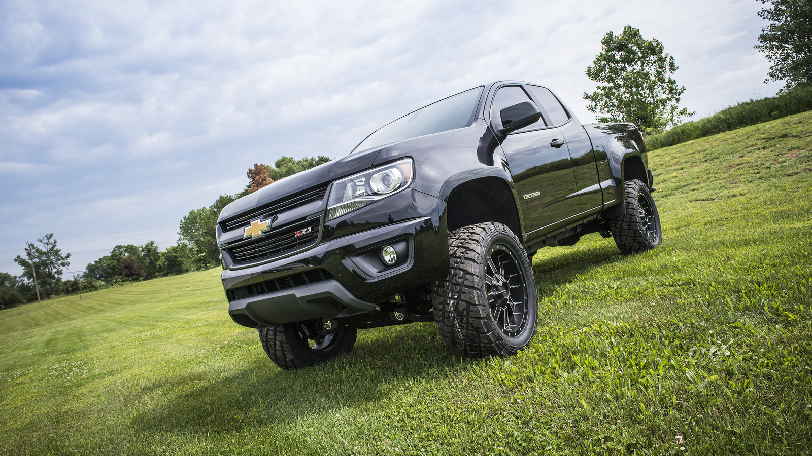

Como escolher a categoria certa (hatch, SUV ou 4x4) para cada operação da sua empresa

A decisao em uma frase
A categoria do veículo deve acompanhar a função da operação. Quando isso não acontece, a empresa paga mais e entrega menos.
A decisao em uma frase
A categoria do veículo deve acompanhar a função da operação. Quando isso não acontece, a empresa paga mais e entrega menos.
O que mudou no mercado
Com oferta mais diversa no mercado de locação, o ganho está na aderência do veículo ao uso real, não no modelo mais caro.
Quando esse tipo de decisao fica urgente
- Sua equipe roda majoritariamente em ambiente urbano e trajeto previsível.
- Há deslocamento frequente com carga, equipe ou estrada de acesso difícil.
- Você precisa equilibrar conforto executivo com eficiência de custo.
Criterios que devem mandar na escolha
- custo total da missao
- tempo improdutivo escondido
- risco operacional se o veiculo falhar
- complexidade interna para administrar a escolha
Como cada cenario responde melhor
Cenario 1: agenda critica saindo do aeroporto
A retirada no aeroporto tende a ganhar quando tempo de deslocamento vale mais do que a taxa adicional.
Cenario 2: viagem administrativa com folga de horario
A loja tende a ganhar quando ha margem para deslocamento externo sem risco para a agenda.
Cenario 3: operacao recorrente
O melhor modelo e o que vira politica padrao sem gerar excecao toda semana.
Metodo de decisao
- Classifique a operação em três cenários: urbano leve, executivo misto e campo/uso severo.
- Defina quilometragem média, carga transportada e perfil de terreno.
- Atribua categoria por cenário: hatch para eficiência urbana, SUV para uso misto, 4x4 para campo.
- Padronize critérios de upgrade e substituição para evitar improviso.
- Revise trimestralmente aderência da categoria com base em uso real.
Onde a maioria erra
- Comprar conforto desnecessário para operação estritamente urbana.
- Usar categoria urbana em operação de campo com perda de produtividade.
- Trocar categoria por preferência pessoal e não por critério operacional.
A nuance que evita decisao ruim
Preco inicial e um numero facil de comparar, mas custo total e um numero mais verdadeiro. A decisao certa quase sempre exige olhar os dois.
FAQ
SUV sempre vale mais que hatch?
Não. Em operação urbana leve, hatch costuma ter melhor eficiência de custo e agilidade.
Quando 4x4 é obrigatório?
Quando há trajeto frequente em terreno de baixa aderência ou demanda de carga e robustez.
Como evitar erro de categoria?
Use dados de rota, quilometragem e tipo de missão para cada time.
Conclusao
Crie sua matriz de categoria por operação e pare de decidir frota por intuição.